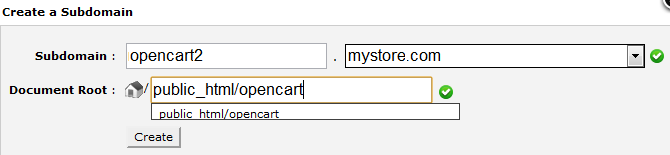

Для интернет-магазина со спецификой обслуживания широкого спектра клиентов, в том числе иностранных потребителей, возрастает необходимость установки мультиязычности. Английский язык предоставляется OpenCart, как язык по-умолчанию. Другие доступные языки можно просмотреть на языковой странице OpenCart. Скачать языковой пакет, вы сможете из Каталога Дополнений.
Установка языкового пакета с помощью FTP-клиента
Любой языковой пакет, кроме английского, загружается и устанавливается в магазин OpenCart, с помощью FTP-клиента, например такого, как FileZilla. Перед тем, как мы продолжим, пожалуйста, убедитесь в том, что вы обладаете, загруженным из Каталога Дополнений, языковым пакетом. Распакуйте его, а содержимое разместите в одну из папок на вашем компьютере. Далее, подключаемся в интернет-магазину OpenCart, при помощи FTP-клиента. Находим корневую папку - место расположения, установленного магазина OpenCart. Задаем следующий путь: Каталог > Языки. Здесь уже расположена папка английский язык. Сюда же производим загрузку нового языкового пакета.
Добавить язык в панель администратора
После загрузки языкового пакета с помощью FTP-клиента, вам будет необходимо внести определенную информацию о нем в меню Система панели управления OpenCart. Поля, требующие заполнения расположены во вкладке Локализация. Заполнив поля формы, нажмите сохранить.
Сохраненный, во вкладке Локализация, языковой пакет, сразу становится доступным на витрине интернет-магазина. Расположен он в заголовке и доступен на каждой странице. Рассмотрим картинку ниже, на которой изображен пример добавления немецкого языка. Языковой пакет, устанавливаемого языка, в данном случаи немецкого, был загружен с помощью FTP-клиента. Заполняем необходимые поля и устанавливаем 2 в поле порядок сортировки. Переходим на витрину магазина и видим, что, созданный нами, языковой пакет расположен справа от языка по-умолчанию. Клик по флагу Германии, автоматически изменит язык витрины.
OpenCart позволяет управлять несколькими интернет-магазинами, используя разовую установку. Если вы выполнили установку OpenCart хотя бы для одного своего магазина, вам не потребуется повторная инсталляция при добавлении мультимагазина в панель администратора. Все, что вам необходимо сделать, это создать субдомен в cPanel и добавить его в раздел Настройки меню Система в панели управления.
Выполнив вход в cPanel со своего основного магазина, вы можете приступить к созданию субдомена. Создайте новую папку под названием Субдомен. В корневом каталоге, свяжите папку субдомена с папкой, где был установлен основной магазин. Например, основной магазин установлен в папке «public_html/opencart», новый субдомен (opencart2) создаем здесь же: «public_html/opencart». Точно также, вы сможете добавить еще несколько субдоменов, для создания мультимагазина.

При открытии субдомена в браузере, на экране будет виден основной магазин. Новый магазин станет доступен после произведения настроек субдомена в панели администратора.
Если вы видите отображение основного магазина, там где должен быть новый, не беспокойтесь, это нормально. Чтобы новый магазин стал видимым его, изначально, необходимо добавить в панель администратора OpenCart.
Добавить новый магазин в раздел настройки
К месту расположения сайта магазина добавляем "/admin" и получаем доступ к панели управления, например: «opencart.mystore.com/admin» или «opencart2.mystore.com/admin». Вам необходима всего лишь одна панель администратора для управления мультимагазином.
Чтобы создать новый магазин, в панели администратора выполняем переход Система > Настройки и нажимаем добавить. Заполняем поля вкладок Общие, Витрина, Локализация, Опции, Изображения и Сервер соответствующей информацией. Здесь доступно добавление нового шаблона, логотипа, валюты, языка и макета. Далее нажимаем сохранить и видим, что отображение основного магазина заменяется витриной нового.
В панели администратора происходит редактирование и настройка информации о товарах, категориях, покупателях и т.д. для каждого отдельного магазина. Во вкладке Связи вы сможете индивидуально установить доступность определенного товара, а во вкладке Данные доступность категорий в том или ином магазине. Информация о покупателях и заказах автоматически будет сохранятся в том интернет-магазине, где была создана учетная запись либо сделана покупка.
Менеджер изображений и файлов OpenCart часто вызывает у пользователей определенные трудности. Проверка соответствия следующих пунктов может значительно уменьшить ваши трудозатраты:
Перемещение OpenCart на другой сервер
OpenCart может быть легко перенесен на новый веб-сервер. Алгоритм перемещения изложен ниже:
OpenCart позволяет использовать оптимизированные под URL поисковые системы для товаров, категорий, производителей и информационных страниц. SEO слова назначаются товарам, категориям, производителям и информационным страницам,и хранятся в таблице базы данных (url_alias). Страницы просматриваются и переводятся в соответствии с требованиями URL.
Чтобы использовать SEO ключевые слова, их необходимо подключить в настройках Системы панели управления.
Правильно составленный .htaccess файл должен находиться в корневом каталоге установки OpenCart (наряду с папками администратор и каталог). Содержимое файла .htaccess приведено ниже:
Htaccess.txt файл должен присутствовать в корневой папке вашего магазина. Если нет, скопируйте и вставьте текст в текстовый редактор, а затем сохраните как «.htaccess». Если. htaccess.txt файл присутствует, измените ее имя на «.htaccess». В измененный файл .htaccess, добавьте уникальные SEO ключевые слова, соответствующие определенным товарам, производителям, категориям, информационным страницам. Каждое SEO ключевое слово должно быть уникальным на всю систему. На картинке ниже, изображена вкладка Данные с внесенным SEO словом “nikon-camera” для товара Nikon D300:
Если ваш магазин расположен здесь: "www.mystore.com, тогда ключевое слово для Nikon D300 будет находится здесь: www.mystore.com/nikon-camera. В целом, SEO ключевые слова создают для очистки URL-страницы вашего магазина, а также для оптимизации для поисковых систем.
Довольно важно обеспечить необходимую защиту информации о клиентах и платежах, во время ее прохождения между веб-сервером и браузером. В целях удовлетворения данной необходимости, многие владельцы интернет-магазинов обращаются к HTTPS, для обеспечения дополнительной безопасности. Перед подключение HTTPS, вам необходимо получить и установить SSL сертификат.
Установив SSL сертификат, перейдите во вкладку Сервер меню Система в панели управления. Первая опция вкладки позволит вам выбрать, устанавливать SSL сертификат или нет. Указав да, вы установите доступ к вашему магазину через HTTPS.
В то время, как непосредственные модули, каналы продвижения и дополнения OpenCart должны быть автономными, некоторые из них требуют модификаций в ядре OpenCart. Изменение файлов ядра OpenCart, может сократить возможность обновления интернет-магазина, а также повлиять на работу модулей и дополнений. vQmod обеспечивает механизм, с помощью которого модули, требующие изменений ядра, могут быть установлены без повреждения целостности основной системы. vQmod содержит список файлов и, требуемых, изменений, в виде одного XML-файла.
Если вы хотите обновить магазин или установить сторонний модуль, настоятельно рекомендуем воспользоваться системой vQmod. Ссылку для загрузки vQmod и инструкцию по ее установке, вы сможете найти здесь: http://code.google.com/p/vqmod/.
Загрузив необходимый zip-файл vQmod, распакуйте его и перенесите в корневую папку сайта вашего магазина, с помощью FTP-клиента. На картинке ниже, изображен пример расположения корневой папки магазина на удаленном диске в программе FileZilla: public_htm/opencart. Сюда же и переносим папку vQmod.
vQmod советует вам задать разрешения записи для папок vqmod/vqcache, index.php и admin/index.php. Для установки записи, в программе Filezilla нажимаем правой кнопкой мыши на файл или папку, выбираем «Файл разрешений...» и вводим 755 или 777 в «Численное значение».
Следующий шаг установки vQmod, требует посещения установочной страницы в магазине. Введите адрес размещения магазина в строку браузера, добавив в конце vqmod/install. Например, если адрес вашего магазина www.mystore.com, то страница установки vQmod будет расположена здесь: www.mystore.com/vqmod/install. Если установка прошла успешно, на странице отобразится надпись: “vQmod успешно установлен!”
В отличии от установки OpenCart, после инсталляции vQmod, папку “install” удалять не следует.
Рекомендуем перезагрузить домашнюю страницу, чтобы убедится в корректности работы системы vQmod после установки, а также, проверить папку vqmod/vqcache на наличие новые vq-файлов.
OpenCart не несет ответственности за безопасность вашего веб-сайта, поэтому обеспечение необходимого уровня безопасности лежит на ваших плечах. Ниже переведены базовые шаги, направленные на повышение уровня безопасности вашего магазина OpenCart. Данные шаги могут быть предприняты сразу же после установки OpenCart; либо, всякий раз, во время онлайн работы магазина. Об инсталляции магазина OpenCart, читайте в разделе Установка.
Папку "install" рекомендуется удалять сразу после установки OpenCart. В случаи, если папка не была удалена, OpenCart предупредит вам об этом в панели управления.
В папке администратор содержатся данные доступа к панели управления. Люди, имеющие доступ к панели администратора, смогут вносить изменения в настройки магазина, редактировать информацию о товарах, покупателях, категориях и т.д. Поэтому очень важно обеспечить сложность доступа к информации в папке администратор.
Переименовать папку администратор
Переименуйте папку администратор на имя несоответствующее содержанию папки. Данным вы предотвратите ее обнаружение сторонними людьми. Например, мы сменили стандартное имя папки администратор “admin” на “cookiemonster”. Чтобы получить доступ к панели управления, в строку браузера вводим адрес расположения магазина с добавлением нового имени папки в конце: www.yourstore.com/cookiemonster.
Расположенные в папке администратор файлы .htaccess & .htpasswd, защитят ваш магазин от взлома хакеров. С помощью файла .htaccess, вы сможете запретить доступ просмотра магазина всем IP-адресам, за исключением IP-адрес администратора. А файл .htpasswd будет запрашивать ввод дополнительного пароля для доступа к папке администратор.
Защита папки каталог производится с помощью файла .htaccess. Файл соответствия поможет вам защитить важные для магазина типы файлов, например php и txt. На картинке ниже, изображен пример кода, который может быть использован в папке каталог:
Данным вы запретите доступ ко всем шаблонам, а также php и txt файлам магазина.
Папка система содержит два файла, которые должны быть защищены: logs/error.txt и start_up.php. Logs/error.txt может быть переименован, если в этом есть необходимость.
Файл .htaccess предотвращает доступ кого-либо, кроме, назначенного администратора, к указанных выше файлам и подпапкам папки система. Чтобы активировать защиту, вставьте, приведенный ниже код в файл .htaccess:
В указанных ниже файлах, необходимо установить численное значение 644 или 444. Данным мы запретим внесение каких-либо изменений в файлы.